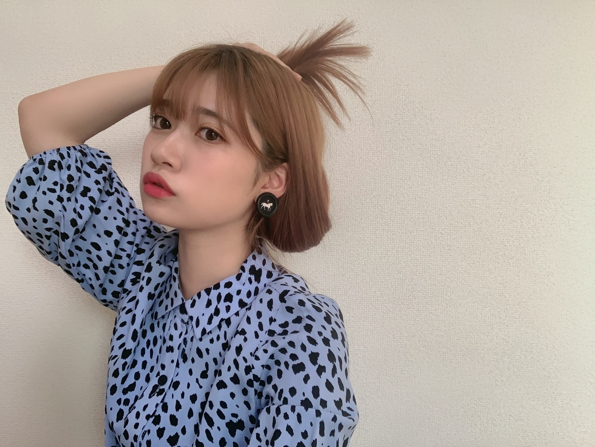
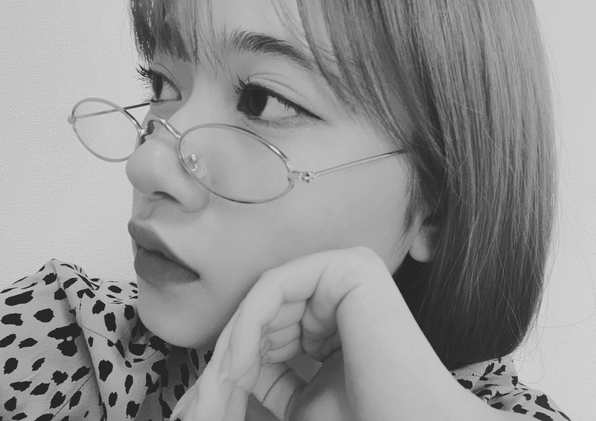

2020/0707Tue時代です

玉葱。
最近は、携帯の容量が重すぎて
メールボックスが開けなくなりました。
書き溜めていたブログは消え
やはり思い立ったらすぐ行動して
躊躇せずにやるべきなのだと携帯が教えてくれました。
仮にブログやモバメ
私から届かなかったらもしかしたら
また、蘭世の携帯容量いっぱいなのかーとお察しください。
画像も整理整頓して
アプリもスッキリさせましたー。
携帯の中もお掃除すると気持ちスッキリしますー。
メールボックスも綺麗になりました。
また、モバメ送りますね。☺️
モバメが始まった当初
当初はまだ今よりも皆さんにみてもらえる場所がなくて
そこで私はこんな子だよーって
見つけて欲しくて
1日にとんでもない数のメールを送ったこともありました、、、。
自撮りとかは苦手だけど
文章を書くことが好きで
そしたら、それをきっかけに
何年も連載をさせてもらってる
NEWSがとまらんぜが始まったり
このご時世ですので
なかなか直接会うことが難しくなり
状況は違えどこの状況の
もどかしさからか昔の事を思い出してしまいます。
私の言葉を読んでもらい聞いてもらい少しでも皆さんが楽しんでくれるなら
また、やりたいなーって
っという事で！
明日、いつもよりは多めに
何通送るかは決めてないのです、、、！
気持ちばかりではありますが！
メールしますね！
良かったら、お付き合いください。☺️
明日だけでもお試しでも
お付き合いください！！
何年たっても
一つ一つの繋がりは大切。
私は大切にしていたいです。☺️
では、また明日。☺️
メールで待ってます！！！
本日は七夕ですね！！
私とは明日メールでお会いしましょう。☺️

2020/07/07 18:36
コメント(701)
更新ありがと！
ちょっと前の写真？かな？
1日に何通きてもファンとしては嬉しいよ〜
はやくあいたい！
ちょっと前の写真？かな？
1日に何通きてもファンとしては嬉しいよ〜
はやくあいたい！
ブログ更新ありがとう！
僕も最近携帯が重くて、iPhoneのアプリが色透けて見えてしまいます。替え時なのかも知れません…
明日ですね！了解です✌️
楽しみにしてます笑
七夕…願い事はしました。
大好きです
そうや
僕も最近携帯が重くて、iPhoneのアプリが色透けて見えてしまいます。替え時なのかも知れません…
明日ですね！了解です✌️
楽しみにしてます笑
七夕…願い事はしました。
大好きです
そうや
ブログ更新ありがとうございます！
明日のモバメすっごく楽しみです
相変わらずお洒落で素敵です！
明日のモバメすっごく楽しみです
相変わらずお洒落で素敵です！
ブログ更新ありがとうございます！
私はまだ中学生でモバメはとれていないのですが、
違う次元でお会いしたいと思います…
私はまだ中学生でモバメはとれていないのですが、
違う次元でお会いしたいと思います…
ブログ更新ありがとう！
ブログが更新される度に、早くライブができるようにならないかなと思う今日この頃。
ブログが更新される度に、早くライブができるようにならないかなと思う今日この頃。
蘭世ちゃん！髪色変化で、更に可愛さ増し増しです！眼鏡の蘭世ちゃんも素敵！僕も眼鏡をかけているから、僕も素敵！今日は七夕、蘭世姫に会える日まで、心身を人として、成長したいと、思います。明日のメール、楽しみです！
蘭世ちゃんブログ更新ありがとう!
ビックリしたw
蘭世ちゃんショートカットにしたのかと思ったよ
ショートもロングもどっちも可愛いけどね!
また明日ね！
楽しみ〜
モバメはいつも楽しみに待ってまーすw
ビックリしたw
蘭世ちゃんショートカットにしたのかと思ったよ
ショートもロングもどっちも可愛いけどね!
また明日ね！
楽しみ〜
モバメはいつも楽しみに待ってまーすw
Good!!!
蘭世ちゃんショートもにあうってことが発覚したね めちゃめちゃ似合ってます可愛い
ブログありがとう！
明日のモバメ待ってます！
明日だけじゃなくて
これからもずっと蘭世のモバメは取り続けるよ！
明日のモバメ待ってます！
明日だけじゃなくて
これからもずっと蘭世のモバメは取り続けるよ！
らんぜーー＼(^o^)／お疲れさまでした
可愛い、このたまねぎヘア(*´ω｀*)♡♡♡
（ちなみに、玉葱読めなかった(｡>﹏<｡)（笑））
ブログが消えるってやっぱり大変だよね(｡>﹏<｡)
でも携帯の内容を整理したら、やっぱりすっきりになるよね＼(^o^)／
えーー？蘭世のモバメ読みたいなあ(｡>﹏<｡)
モバメ頑張ってね(/･ω･)/
あっ、メガネ蘭世かっこいいなあ(｡>﹏<｡)
これからも頑張って(/･ω･)/
可愛い、このたまねぎヘア(*´ω｀*)♡♡♡
（ちなみに、玉葱読めなかった(｡>﹏<｡)（笑））
ブログが消えるってやっぱり大変だよね(｡>﹏<｡)
でも携帯の内容を整理したら、やっぱりすっきりになるよね＼(^o^)／
えーー？蘭世のモバメ読みたいなあ(｡>﹏<｡)
モバメ頑張ってね(/･ω･)/
あっ、メガネ蘭世かっこいいなあ(｡>﹏<｡)
これからも頑張って(/･ω･)/
らんぜ、ブログ更新ありがとう！
らんぜのブログの通り、今だからこその「繋がり」の形があると思います。
そして、こんなご時世だからこそ、らんぜの強い言葉は多くの人に響きます。
これからも「蘭世節」の発信を、無理のない程度に。
また、今日、乃木恋の特典直筆メッセージカードが届きました。
今の時代でも七夕の日の一つの思い出ですね。
ブログ、モバメの更新楽しみに待ってます。
すぎちゃん
らんぜのブログの通り、今だからこその「繋がり」の形があると思います。
そして、こんなご時世だからこそ、らんぜの強い言葉は多くの人に響きます。
これからも「蘭世節」の発信を、無理のない程度に。
また、今日、乃木恋の特典直筆メッセージカードが届きました。
今の時代でも七夕の日の一つの思い出ですね。
ブログ、モバメの更新楽しみに待ってます。
すぎちゃん
ブログ更新ありがとう！
まだまだ蘭世の新たな一面発見できたらいいなぁ
星に願いを。ゆっくり休んでね〜
まだまだ蘭世の新たな一面発見できたらいいなぁ
星に願いを。ゆっくり休んでね〜
蘭世ー！ブログ更新ありがとー！(^^)今日もお疲れさま！！！
スマホの容量問題俺もちょくちょくあるー(--;)
俺もめんどくさくてやらないこと多いんだけどやると気持ちいいんだよね笑
蘭世のメール大好きだからめっちゃ嬉しい！
蘭世のメールで容量いっぱいになるなら本望！！！
何通でも待ってるよー(´- `*)
スマホの容量問題俺もちょくちょくあるー(--;)
俺もめんどくさくてやらないこと多いんだけどやると気持ちいいんだよね笑
蘭世のメール大好きだからめっちゃ嬉しい！
蘭世のメールで容量いっぱいになるなら本望！！！
何通でも待ってるよー(´- `*)
らんらん、こんばんは( ￣▽￣)ﾉｼブログ更新ありがとう♪
今日は七夕ですねー。
だからと言って何もしてないですが。
ちなみに北海道の七夕は８月７日です。知ってました？
メールを待っているのはボクはじめファンのほうですね(笑)
明日楽しみだなぁヽ( ・∀・)ﾉ♪
今日は七夕ですねー。
だからと言って何もしてないですが。
ちなみに北海道の七夕は８月７日です。知ってました？
メールを待っているのはボクはじめファンのほうですね(笑)
明日楽しみだなぁヽ( ・∀・)ﾉ♪
蘭世さんブログ更新ありがとう！！！
ranzemailはいつも心の拠り所です、楽しいメールありがとうございますね
毎日ってわけではなく不定期でどばーっと来る感じのメール頻度がすごく好きです、蘭世らしさってのが感じられます
いつもファン想いのメールくれるのほんと嬉しいですよ、このコロナ禍だとより顕著だなぁ、優しさですね
蘭世さんから出てくる言葉はほんと好きで、蘭世さんという人を表してるから言葉を受け取るだけでも元気になれます、もちろん早く会いたいですけどね！
今日は七夕ですね、僕としては去年蘭世さんに初めて会った日です、大好きな日になりました、これからも思い出を紡いでいきたいな、大好きです、この想いはずっと…
これからもよろしくお願いします！！！
UY
ranzemailはいつも心の拠り所です、楽しいメールありがとうございますね
毎日ってわけではなく不定期でどばーっと来る感じのメール頻度がすごく好きです、蘭世らしさってのが感じられます
いつもファン想いのメールくれるのほんと嬉しいですよ、このコロナ禍だとより顕著だなぁ、優しさですね
蘭世さんから出てくる言葉はほんと好きで、蘭世さんという人を表してるから言葉を受け取るだけでも元気になれます、もちろん早く会いたいですけどね！
今日は七夕ですね、僕としては去年蘭世さんに初めて会った日です、大好きな日になりました、これからも思い出を紡いでいきたいな、大好きです、この想いはずっと…
これからもよろしくお願いします！！！
UY
ブログ更新ありがとう！
蘭世さんの言葉、大好きです。
いつも勇気づけられてます。
メール、今日もいっぱい来たけど明日もいっぱい来るんですね：）
いつでも僕はウェルカムなので、メール待ってますね！
僕も蘭世さんに対して書きます！
蘭世さんに想いが届くよう、沢山コメントします！
いつもありがとう：）
またコメントしに来ますね！
悠人⊿
蘭世さんの言葉、大好きです。
いつも勇気づけられてます。
メール、今日もいっぱい来たけど明日もいっぱい来るんですね：）
いつでも僕はウェルカムなので、メール待ってますね！
僕も蘭世さんに対して書きます！
蘭世さんに想いが届くよう、沢山コメントします！
いつもありがとう：）
またコメントしに来ますね！
悠人⊿
蘭世ちゃん、ブログ更新ありがとう！
ショートめっちゃ似合って可愛いよ！
今日は七夕やね！3つ願い事してそのうちの1つが叶ったから
嬉しい！
早くライブや握手会で会える日が来ると良いね！
またね！
ショートめっちゃ似合って可愛いよ！
今日は七夕やね！3つ願い事してそのうちの1つが叶ったから
嬉しい！
早くライブや握手会で会える日が来ると良いね！
またね！
蘭世さん更新ありがとう！
そんなに容量満タンだったのですか…笑
掃除に限らず、スマホもスッキリさせると気持ちいいですよね〜
これでスマホもサクサク動いてくれますかね？
モバメも一つのアピール手段ですよね！
これをきっかけに蘭世さんの事を知ってくれる人も出てくるでしょうし、知っている人もますます好きになると思いますよ。
蘭世さんの書く文章は、どれも蘭世さんの考えがハッキリ現れていて好きです。
これだけ自分の意見を発信できるのは素晴らしいことだと思います！
好きなだけメール送って下さいね〜
楽しみに待ってます！
そんなに容量満タンだったのですか…笑
掃除に限らず、スマホもスッキリさせると気持ちいいですよね〜
これでスマホもサクサク動いてくれますかね？
モバメも一つのアピール手段ですよね！
これをきっかけに蘭世さんの事を知ってくれる人も出てくるでしょうし、知っている人もますます好きになると思いますよ。
蘭世さんの書く文章は、どれも蘭世さんの考えがハッキリ現れていて好きです。
これだけ自分の意見を発信できるのは素晴らしいことだと思います！
好きなだけメール送って下さいね〜
楽しみに待ってます！
蘭世ちゃんモバメたくさんありがとう。ブログもありがとうね。今まで個握も全握もたくさん蘭世ちゃんに元気をもらいました。またこれからもよろしくお願いします。
自分モバメ取ってないから見れない…
いつも色んな人が蘭世さんのモバメのことをTwitterで書いてて羨ましいなって思ってます。
自分も提出しないといけない動画あってそれを溜めすぎて容量が足りなくなりそうになりました。
早く会いたいです。
いつも色んな人が蘭世さんのモバメのことをTwitterで書いてて羨ましいなって思ってます。
自分も提出しないといけない動画あってそれを溜めすぎて容量が足りなくなりそうになりました。
早く会いたいです。
かわいいいいー！！！
みんな髪の毛切ってるからてっきり蘭世も切ったのかと思った！！笑
蘭世の魅力が止まらんぜ！！って思った可愛い！
明日はお仕事お休みだから楽しみにしておくねー♡
メール更新待ってますー！
暑い日が続いてるから体には気をつけてね！
みんな髪の毛切ってるからてっきり蘭世も切ったのかと思った！！笑
蘭世の魅力が止まらんぜ！！って思った可愛い！
明日はお仕事お休みだから楽しみにしておくねー♡
メール更新待ってますー！
暑い日が続いてるから体には気をつけてね！
ブログ更新ありがとうございます。眼鏡姿も眼福です。ブログの予告をモバメでモバメの予告をブログでやるのがどっちも大切にしてくれてて好きです。まだまだ油断はできないので、身体には気をつけて下さい。
蘭世ちゃんありがとうございます♪
言葉を使うのは苦手ですが
メンバーのブログとかを読むことがとても助かります♪
言葉を使うのは苦手ですが
メンバーのブログとかを読むことがとても助かります♪
蘭世こんばんは
ブログ更新ありがとう
たまには携帯の整理もいいね
自分もやろうかな
メールたくさん来るのはとっても嬉しいから明日楽しみにしてるね！
今回はこの辺で
またコメント書くね
らんぜの勢いとまらんぜ〜
ブログ更新ありがとう
たまには携帯の整理もいいね
自分もやろうかな
メールたくさん来るのはとっても嬉しいから明日楽しみにしてるね！
今回はこの辺で
またコメント書くね
らんぜの勢いとまらんぜ〜
蘭世こんばんは！
ブログ更新ありがとう♪
メール見たから更新楽しみにしてた！！！
私も最近携帯の容量がいっぱいで
アプリが開けなくなって
写真フォルダの整理した☺️
気持ちもスッキリするね。
メール、いつも蘭世のペースでありがとう。
時々一気にきたり間隔がすごく空いたり
緩急が激しいけどそこが好きだな〜
蘭世らしくて、すごくちょうど良いなって✨
最近お仕事で長く文章を書くことがあって
私も文章書くことが好きだなーと
気づくことができたんだ！
だからいつもコメント長いんだなって思ったり。笑
この期間は、蘭世がいつもよりたくさん
ブログの更新ややメールをくれて
考えてくれてるのがすごく嬉しい！
どれだけ伝えても伝え切れないけど
ありがとう、大好きです！
明日、メール待ってます♡
またコメントするね。
ではっ！
ブログ更新ありがとう♪
メール見たから更新楽しみにしてた！！！
私も最近携帯の容量がいっぱいで
アプリが開けなくなって
写真フォルダの整理した☺️
気持ちもスッキリするね。
メール、いつも蘭世のペースでありがとう。
時々一気にきたり間隔がすごく空いたり
緩急が激しいけどそこが好きだな〜
蘭世らしくて、すごくちょうど良いなって✨
最近お仕事で長く文章を書くことがあって
私も文章書くことが好きだなーと
気づくことができたんだ！
だからいつもコメント長いんだなって思ったり。笑
この期間は、蘭世がいつもよりたくさん
ブログの更新ややメールをくれて
考えてくれてるのがすごく嬉しい！
どれだけ伝えても伝え切れないけど
ありがとう、大好きです！
明日、メール待ってます♡
またコメントするね。
ではっ！
ブログ更新ありがとう!
蘭世の言葉のひとつひとつが、大好きです。
今まで見逃していたものを見るようになったり、たくさんいい影響を受けてます。
またブログ、モバメ待ってます。是非蘭世のペースでよろしく!
蘭世の言葉のひとつひとつが、大好きです。
今まで見逃していたものを見るようになったり、たくさんいい影響を受けてます。
またブログ、モバメ待ってます。是非蘭世のペースでよろしく!
蘭世さんブログ更新ありがとうございます。
蘭世さんの文章と言葉が持つ力がいろんな人に伝わればいいなぁと思ってます！
突然画像だけのメールがたくさん送られてきたり
魂がこもった文章が送られてきたり
こちらを気遣ってくれる優しい文章が送られてきたり
蘭世さんのメールは魅力がいっぱいだと思います！
明日のメールも楽しみにしてます！
蘭世さんの文章と言葉が持つ力がいろんな人に伝わればいいなぁと思ってます！
突然画像だけのメールがたくさん送られてきたり
魂がこもった文章が送られてきたり
こちらを気遣ってくれる優しい文章が送られてきたり
蘭世さんのメールは魅力がいっぱいだと思います！
明日のメールも楽しみにしてます！
今日も1日お疲れ様でした♪o(^-^)o
そしてそして、今日はたくさんのモバメとブログの更新、ありがとうございました！(^^)
元気出ましたーーー♪＼(^▽^)／
きっかけ、大切ですよね♪
今回の試みが、素敵なきっかけとなりますように♪o(^-^)o
っと、忘れる前に…
玉葱って…(≧∀≦)
たしかに玉葱っぽいですが、いきなり玉葱は最高過ぎます！！(*≧∀≦*)
お茶目ガールですか！！(≧∀≦)
蘭世ちゃん、かわゆい♪（*´艸`*)
今日も楽しかったです！！
明日が楽しみです！！
本当に、明日の行動が素敵なきっかけになると良いですね！
わくわく♪o(^-^)o
そしてそして、今日はたくさんのモバメとブログの更新、ありがとうございました！(^^)
元気出ましたーーー♪＼(^▽^)／
きっかけ、大切ですよね♪
今回の試みが、素敵なきっかけとなりますように♪o(^-^)o
っと、忘れる前に…
玉葱って…(≧∀≦)
たしかに玉葱っぽいですが、いきなり玉葱は最高過ぎます！！(*≧∀≦*)
お茶目ガールですか！！(≧∀≦)
蘭世ちゃん、かわゆい♪（*´艸`*)
今日も楽しかったです！！
明日が楽しみです！！
本当に、明日の行動が素敵なきっかけになると良いですね！
わくわく♪o(^-^)o
蘭世さん、ブログ更新ありがとう。
蘭世さんという人を私たちが知られる場、いつも楽しみにしています。会えない今だからこそ、より楽しみです。
さっきですらたくさんメールくれたのに…明日はワクワクしてます！！
蘭世さんという人を私たちが知られる場、いつも楽しみにしています。会えない今だからこそ、より楽しみです。
さっきですらたくさんメールくれたのに…明日はワクワクしてます！！
ブログ更新ありがとう！！
らんぜ、写真とてもおしゃれだね！
大好きです！！
らんぜ、写真とてもおしゃれだね！
大好きです！！
やぁ(｡･ω･)ﾉﾞ最愛なる蘭世
ブログ更新ありがとう
玉葱ヘアー可愛い！！
パタリロのタマネギ部隊思い出す笑
実はみんなイケメンって言うな笑
容量がパンパンなんやな～
容量あげていこう！
って言うても蘭世
あ、携帯から教わったんやな笑
なるほどこっちが察したらええんやな笑笑
う～んでも頭の片隅にでも容量アップしようかなって考えも置いといて欲しいな
お！携帯の断捨離やな
俺もたまにやるで！
モバメ楽しみにしとこ
自撮りな～蘭世
でも最近は自撮りもとってくれてるやん
蘭世
へ～そこからNEWSがとまらんぜが始まったんや。
せやな～直接会うのはすごく難しいよな、また感染者も増えてきてるし…
もどかしさが募るばかりや…
お！明日はじゃ蘭世
コメントも返信で忙しくなるで～～～！
何通でもええんよ、蘭世
いくらでもお付き合いしまっせ！
せやな縁は大切。
俺も蘭世
は～い！また明日な！メールで！
でもな蘭世
きっとままた後で(｡･ω･)ノ
蘭世ちゃんモバメ、ブログ有難うございます！
最初の写真、髪切ったらこんな感じなのかな？って思いました！なんちゃってボブだけど似合ってて素敵ですよ！
蘭世ちゃんの書く文章はストレートに心に響いてくる感じがして、とても好きです。自撮りも、たまに目だけの写真が来たりして個性的で好きですよ？
明日のメール楽しみにしてますね！
最初の写真、髪切ったらこんな感じなのかな？って思いました！なんちゃってボブだけど似合ってて素敵ですよ！
蘭世ちゃんの書く文章はストレートに心に響いてくる感じがして、とても好きです。自撮りも、たまに目だけの写真が来たりして個性的で好きですよ？
明日のメール楽しみにしてますね！
更新ありがとう！
今日は七夕ですね、蘭ちゃんは何か願い事とかしましたか？ 僕は、コロナが早く終息していいままで同りの生活に戻ってライブや握手会に参加出来ますようにって短冊に書いてお願いしました。
東京がまた3桁超えてしまいましたね、第二波来そうで怖いです、たまにマスクつけてない人がいるのでコロナになってもいいの？っていつも思ってます。
明日のメール楽しみに待ってますね！
コメ読みお疲れ様でーす
またね〜
今日は七夕ですね、蘭ちゃんは何か願い事とかしましたか？ 僕は、コロナが早く終息していいままで同りの生活に戻ってライブや握手会に参加出来ますようにって短冊に書いてお願いしました。
東京がまた3桁超えてしまいましたね、第二波来そうで怖いです、たまにマスクつけてない人がいるのでコロナになってもいいの？っていつも思ってます。
明日のメール楽しみに待ってますね！
コメ読みお疲れ様でーす
またね〜
ブログありがとう！！
ケータイってすごいよね
直接は会えないけど連絡は取れるから1人ぼっちにならない
毎日メール来ないかなとbox更新してる
明日待ってるね！
蘭世の白黒写真好きなんだよねー
なんかアーティスティックって感じで
もちろんカラーも好き！
よきよきってかんじ
ケータイってすごいよね
直接は会えないけど連絡は取れるから1人ぼっちにならない
毎日メール来ないかなとbox更新してる
明日待ってるね！
蘭世の白黒写真好きなんだよねー
なんかアーティスティックって感じで
もちろんカラーも好き！
よきよきってかんじ
ブログ更新ありがとう！
今日は僕初個握からちょうど1年！
2部と4部に蘭世行った！
髪切ってるやん
めっちゃ可愛い！
また個握再開になったら蘭世に会いにいく！
今日は僕初個握からちょうど1年！
2部と4部に蘭世行った！
髪切ってるやん
めっちゃ可愛い！
また個握再開になったら蘭世に会いにいく！
ブログ更新ありがとう！
携帯ってすぐ容量あふれますようね、なかなか消した思い出もあります
体調には気をつけてください！
携帯ってすぐ容量あふれますようね、なかなか消した思い出もあります
体調には気をつけてください！
可愛い
髪色、髪型ともに素敵です
ブログ更新ありがとう！
メールは蘭世のペースで良いから気にしないで！
そして、蘭世のモバメでの努力で僕は寺田蘭世という魅力にも気づけたし、こんな子がいるんだって知れたから本当に感謝してます！
今日は七夕の日だけどお願いすることは決めてあります！
内容は秘密です笑
僕も蘭世との繋がりを一つ一つ大事にしていきます！
明日、メールで会いましょう！
蘭世、大好きだよ！
メールは蘭世のペースで良いから気にしないで！
そして、蘭世のモバメでの努力で僕は寺田蘭世という魅力にも気づけたし、こんな子がいるんだって知れたから本当に感謝してます！
今日は七夕の日だけどお願いすることは決めてあります！
内容は秘密です笑
僕も蘭世との繋がりを一つ一つ大事にしていきます！
明日、メールで会いましょう！
蘭世、大好きだよ！
蘭世ブログ更新ありがとうー！
蘭世ショートも似合いそう❕
蘭世ショートも似合いそう❕
らんぜぴんブログ更新ありがとう！！
そんなことがあったの！！わたしもよく容量が足りなくてメールなくなったことある笑
気長く待ってるからね〜
蘭世ちゃんからメールが何通きたって嬉しさが増すだけだよ！！蘭世ちゃんは存在が良いから、、、！！
かわいすぎる写真もありがとう！！だてめ？？ガチメガネ？？どっちにしてもかわいいし似合ってる！！そのお洋服も似合ってるよ〜！
これからも体調には気をつけてね！！☺︎
そんなことがあったの！！わたしもよく容量が足りなくてメールなくなったことある笑
気長く待ってるからね〜
蘭世ちゃんからメールが何通きたって嬉しさが増すだけだよ！！蘭世ちゃんは存在が良いから、、、！！
かわいすぎる写真もありがとう！！だてめ？？ガチメガネ？？どっちにしてもかわいいし似合ってる！！そのお洋服も似合ってるよ〜！
これからも体調には気をつけてね！！☺︎
蘭世さん、ブログ更新ありがとう。
その思い、じっくり読んでもう一回コメントします！
ありがとう
喜章
(よしあき)
その思い、じっくり読んでもう一回コメントします！
ありがとう
喜章
(よしあき)
蘭世ブログ更新ありがとう！
乃木恋の彼氏特典が今日届きました！
七夕の良いプレゼントになりました！
大切にします！
スマホの写真ってついつい溜まって容量いっぱいになるよね。
自分も、定期的に整理します！
モバメ楽しみにしてるよ！
乃木恋の彼氏特典が今日届きました！
七夕の良いプレゼントになりました！
大切にします！
スマホの写真ってついつい溜まって容量いっぱいになるよね。
自分も、定期的に整理します！
モバメ楽しみにしてるよ！
蘭世ブログありがとう！
僕が蘭世推しになったのは1年くらい前なのでモバメでたくさん発信していた時期は知らなかったけれど、そういう時期に蘭世を見つけて応援してくれた人のおかげでこうやって蘭世推しになれたと思うので感謝ばかりです。
蘭世はよくモバメで真面目な話になってしまったって言うけどそういう変にちょけないで真っ直ぐ思いをぶつけてくれる蘭世がとても好きなのでこれからもたくさんの言葉待ってます！
明日楽しみにしてます！！
僕が蘭世推しになったのは1年くらい前なのでモバメでたくさん発信していた時期は知らなかったけれど、そういう時期に蘭世を見つけて応援してくれた人のおかげでこうやって蘭世推しになれたと思うので感謝ばかりです。
蘭世はよくモバメで真面目な話になってしまったって言うけどそういう変にちょけないで真っ直ぐ思いをぶつけてくれる蘭世がとても好きなのでこれからもたくさんの言葉待ってます！
明日楽しみにしてます！！
蘭世ー！
ブログ更新ありがとう！
七夕の願いは蘭世に会うことだよ！
可愛い写真をありがとう！一瞬ショートカットにしたかと思った笑
風邪をひかないように元気に過ごしてね！
またメールとブログ楽しみにしてる！
ブログ更新ありがとう！
七夕の願いは蘭世に会うことだよ！
可愛い写真をありがとう！一瞬ショートカットにしたかと思った笑
風邪をひかないように元気に過ごしてね！
またメールとブログ楽しみにしてる！
ブログ更新ありがとう。
蘭世のモバメは始まった時からずーっと見ています。そんな頃もあったなぁ…と思い出しました。
明日のモバメ楽しみに待ち構えてます。ドンと来い！です(笑)
つい先日僕のスマホも乃木坂とか坂道系の画像や動画達で容量がいっぱいになり警告が出てしまい、とりあえずSDカードに全て引越しさせました。そのSDカードも全て送ったら残り容量が少なくなったので、整理していこうと思います。蘭世の画像達も沢山あるのですが、被っている画像も何枚かありそうなので仕事が休みの日に一斉に整理しようと思ってます。
明日待ってまーす。
蘭世のモバメは始まった時からずーっと見ています。そんな頃もあったなぁ…と思い出しました。
明日のモバメ楽しみに待ち構えてます。ドンと来い！です(笑)
つい先日僕のスマホも乃木坂とか坂道系の画像や動画達で容量がいっぱいになり警告が出てしまい、とりあえずSDカードに全て引越しさせました。そのSDカードも全て送ったら残り容量が少なくなったので、整理していこうと思います。蘭世の画像達も沢山あるのですが、被っている画像も何枚かありそうなので仕事が休みの日に一斉に整理しようと思ってます。
明日待ってまーす。
蘭世ちゃんこんばんは。
ブログ更新ありがとう
いつも楽しみしてますよ〜。
明日のモバメも楽しみにしてます。
また会える日まで出来る事で楽しみましょう
ブログ更新ありがとう
いつも楽しみしてますよ〜。
明日のモバメも楽しみにしてます。
また会える日まで出来る事で楽しみましょう
らんぜ〜！
明日のモバメ楽しみにしてるね！☻
だいすき〜♡
明日のモバメ楽しみにしてるね！☻
だいすき〜♡


蘭世さんのモバメに対しての想いは伝わってきてますよ！
蘭世さんが続けてきたこと、想いは必ず未来につながっているはずです。これからもモバメを楽しみにしてますね。
、を見れるのでオススメです！でも今は課題があるので見れないですけどね…笑
それでは明日のモバメを楽しみにしています！
良い七夕を！